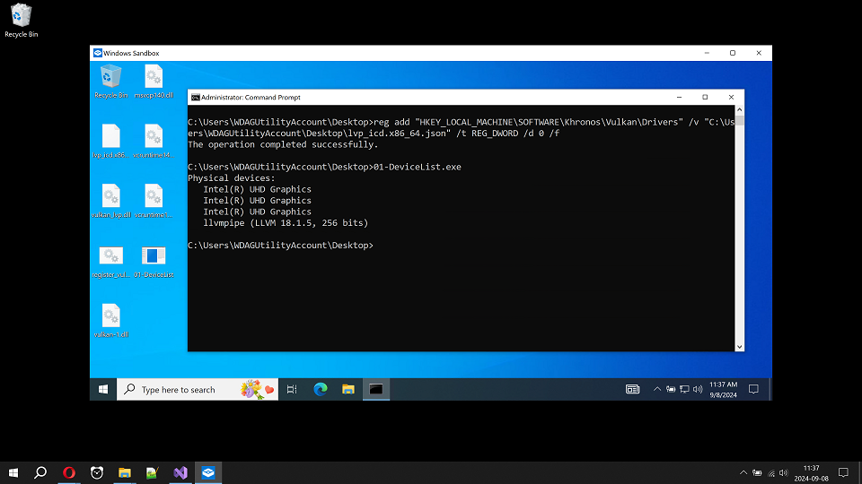
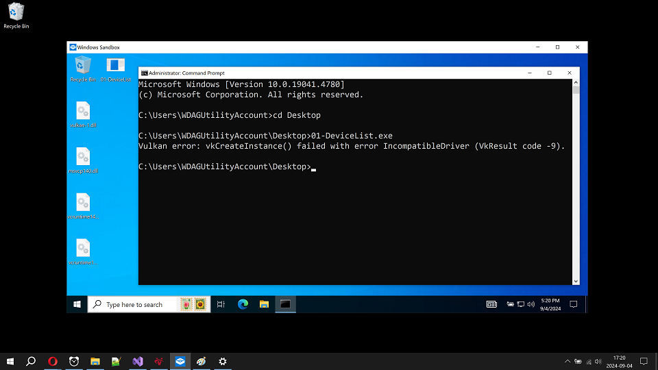
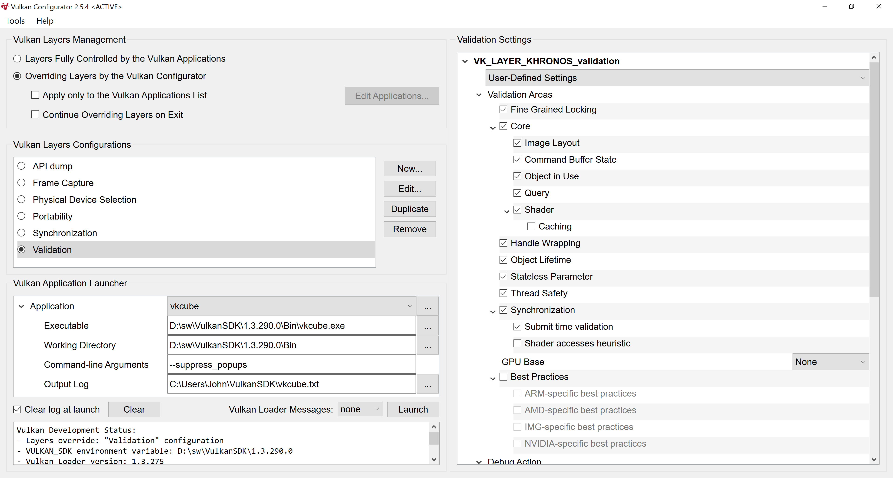
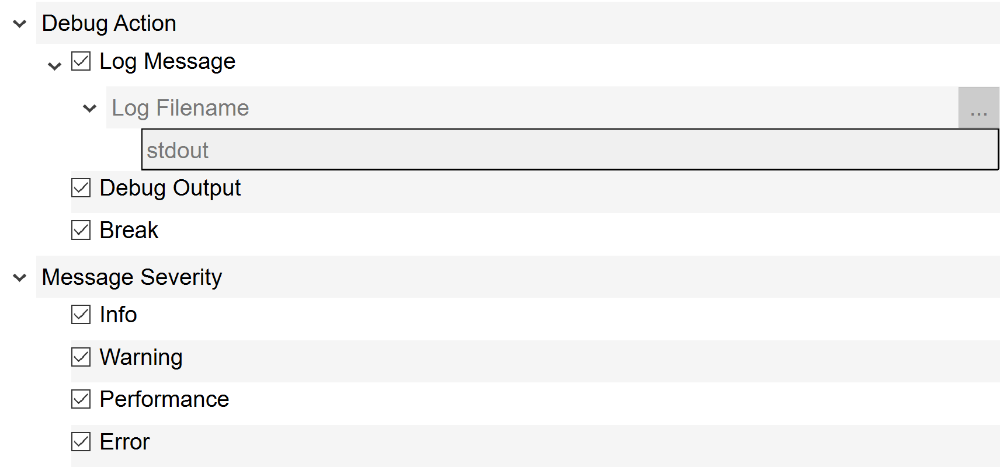
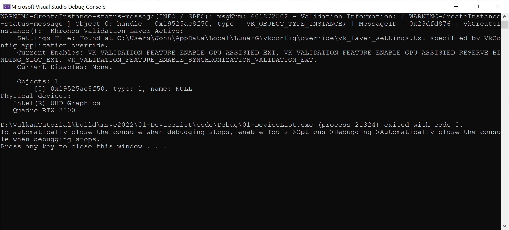
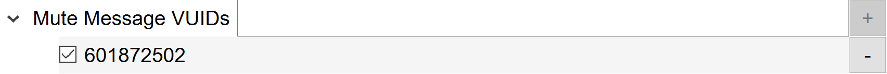
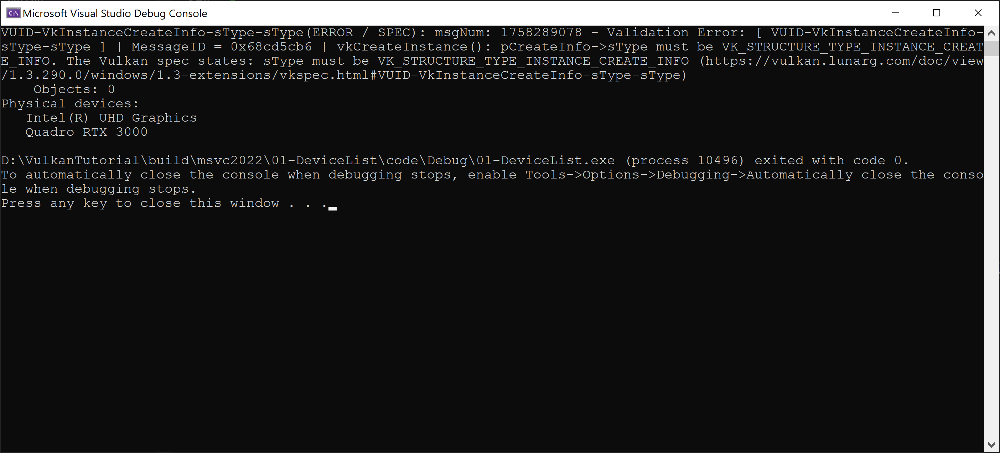

Number of valuable tools and utilities exist that might help us during application development and finally with its deployment on target computers. We will start with those that we can use immediately for testing of our application of the previous article that initializes Vulkan instance and prints out all Vulkan devices available.
Windows Sandbox is a very useful tool to test our application on pristine Windows installation. Each time Windows Sandbox is started, it opens a virtual machine with the pristine Windows installation. After Windows Sandbox is closed, all the changes made inside it are lost.
So, we can take our application of the previous article, put it inside Windows Sandbox and run it. If we provided all required DLLs with our application and if we set up our Windows Sandbox properly, we shall see the result similar to the following one:
When making a release of an application, we need to make sure that the application will run on other computers. Not just on the one that was used for development. Other computers might have different set of libraries and packages installed and often many libraries and packages are missing, compared to our development computer. To find all statically linked DLLs of our application, we can use, for instance, DependencyWalker or its modern alternative Dependencies. And to make a final test, we can use Windows Sandbox. Windows Sandbox provides pristine Windows installation each time we start it, so we can run our application there and see if it runs or some libraries are missing.
Because applications are using different set of libraries on Windows we need to make sure that we included all of them with our executable. Otherwise, application might not run, for instance, on computers that does not have Visual C++ installed. Visual C++ brings some libraries with itself and these might be missing on other computers. Thus, Windows Sandbox might be perfect testing environment for this problem.
To enable Windows Sandbox, you might need Pro or Enterprise version of Windows 10 or 11. It might not be available on Home editions. More detailed requirements can be found on internet. To enable it on Windows 11, go to: Settings -> Apps -> Optional features -> More Windows features and check "Windows Sandbox". For Windows 10, use Settings -> Apps -> Apps & features -> Programs and Features -> Turn Windows features on or off and check "Windows Sandbox".
After enabling Windows Sandbox, we can find it in our start menu. After running it, we get new pristine Windows running in isolation from our Windows. To test our Vulkan application, we need to copy its executable built in release configuration into the Sandbox. You can select it and press Ctrl+C on files you want to copy from your machine. Then, you can click, for instance, on Sandbox desktop and Ctrl+V will paste the files into Sandbox.
We might also need MSVC runtime libraries. When using MSVC 2022, their names are probably msvcp140.dll, vcruntime140.dll and vcruntime140_1.dll. We can get them from MSVC installation folder or download them from Microsoft website. Finally, we will need vulkan-1.dll. If we have graphics drivers installed, it can probably be found in Windows\system32 folder.
After copying all the necessary files, we can open command prompt in the Sandbox, for instance, by opening Start menu and typing cmd. If we copied files to the desktop, we just cd into the folder, type executable name and run it, as is shown bellow:
However, we see Vulkan error that says "incompatible driver". It tells us there is not a single compatible Vulkan driver installed in the system, which might means that there is no Vulkan driver at all. To get working Vulkan driver, we can install CPU driver, or we can allow Windows Sandbox to use Vulkan device of the host operating system, for instance.
To allow Windows Sandbox to use Vulkan device of the host operating system, we need to create a file on the host operating system with the following content:
<Configuration> <vGPU>Enable</vGPU> </Configuration>
We can name it, for instance, "Windows Sandbox with vGPU.wsb". The suffix wsb is important. After the clicking on the file, it is opened by Windows Sandbox. Windows Sandbox reads the configuration file and starts with virtualized GPU. In other words, our Sandbox now looks like it uses graphics card of the host operating system.
Another approach is to install Vulkan CPU driver named lavapipe that is part of Mesa 3D. We can download Mesa 3D compiled binaries for Windows from https://github.com/pal1000/mesa-dist-win. In the releases section, there are binaries built by MSVC and MinGW. Both of them should work well. Among the available downloads, I suggest to take the one with "release" in the name and to skip all "debug" and "devel" versions. After opening the downloaded zip, we need to find vulkan_lvp.dll and lvp_icd.x86_64.json. We can copy both files into the Windows Sandbox desktop and execute the following command in the command prompt:
reg add "HKEY_LOCAL_MACHINE\SOFTWARE\Khronos\Vulkan\Drivers" /v "C:\Users\WDAGUtilityAccount\Desktop\lvp_icd.x86_64.json" /t REG_DWORD /d 0 /f
Or, we can create bat file for the command above for easy driver registering each time we need it. After executing the command, Windows registry contains the reference to lvp_icd.x86_64.json file. The json file carries the info about the driver stored in vulkan_lvp.dll. Now, we should have working Vulkan:
In the screenshot, we can see Intel UHD Graphics that is connected to the real Intel graphics card in the host operating system. For some reason probably known to Microsoft it appears three times. The second Vulkan physical device is llvmpipe. It is CPU Vulkan implementation installed as described above. Now we have working Vulkan testing environment in Windows Sandbox.
Another way to test our application are Vulkan Validation Layers (VVL). Vulkan Validation Layers (VVL) stays between our application and Vulkan implementation and perform validation of Vulkan API calls. In other words, VVL checks for the correct Vulkan API usage. Vulkan is designed for performance, so it is not expected to waste computing resources on checking of the correct API usage. Instead, VVL are usually activated only by the developer using vkconfig tool that simplifies their setup using relatively simple GUI:
Vulkan Validation Layers are part of Vulkan SDK. So, we can download Vulkan SDK for our platform and install it. On Linux, it is possible that packages for Vulkan Validation Layers and vkconfig exist for our Linux distribution. I usually had problem that vkconfig was not present in the packages.
Once we have the things on place, we can use vkconfig utility. On Windows, we can go to Start and type vkconfig or find Vulkan Configurator in the menu. On Linux, typing vkconfig in the console might be the way, or it may appear also in your Start menu of your Linux desktop.
Long info about the usage can be found in vkconfig README.md. For us, the most essential settings are in top-left part called "Vulkan Layers Management". We need the option "Overriding Layers by the Vulkan Configurator" to be selected. In the left center part called "Vulkan Layers Configurations", we need "Validation" to be selected. Finally in the right part, "Validation Settings" should be shown allowing us to customize them.
I usually enable as much as possible options in "Validation Areas" section. The exception might be some options that give me some troubles for some reason. One big exception also includes "Best Practices". They are useful to some extent, but I usually keep them off. The option "GPU base" I keep usually set to GPU-Assisted except when I need printf functionality from the shaders.
For Visual C++ debugger, I suggest to set the following options:
The option "Log Message" enables printing of validation messages into the console for console applications. "Debug Output" option makes messages appear in Output Window inside Visual C++ IDE. "Break" option makes the Visual C++ debugger to stop when Validation Layer message is emitted.
When we run the application again with Validation Layers, we shall see the following output:
The application give us the first validation message. In this case, it is just an info that Vulkan Validation Layers are active. If it disturb us, we can mute the message inside vkconfig by adding its VUID taken from the message itself:
Now, Vulkan Validation Layers run as expected. We can test them by intentionally introduce an error in the code. We might "mistakenly" type vk::STRUCTURE_TYPE_LOADER_INSTANCE_CREATE_INFO instead of vk::STRUCTURE_TYPE_INSTANCE_CREATE_INFO:
vk::InstanceCreateInfo{
.sType = vk::STRUCTURE_TYPE_LOADER_INSTANCE_CREATE_INFO,
.pNext = nullptr,
This is obviously error. Validation Layers will immediately discover it:
The code might still run well, but depending on driver implementation, it might crash on another computer. So, we should definitely fix it. Applications are expected to use Vulkan API correctly, otherwise the behaviour is undefined.
Wrong memory access is often very difficult to debug. Even if the application behaviour is seemingly perfect, it is useful to make sure that there are no memory access issues that might bite us when some new conditions are met. Valgrind is perfect tool for that. Unfortunately, it is only for Linux.
Valgrind translates the program into its own form and appends all kinds of memory access checks including reading and writing before or after allocated memory, reading and writing to already freed memory, reading of uninitialized memory, detecting of memory leaks, and so on.
After running valgrind on our application we can see the output:
valgrind --tool=memcheck ...exeName... ...output...
In other words, there is no wrong memory
Many distributions provide packages for Valgrind. After installing it, we can run it by:
valgrind --tool=memcheck <name of our application>
Valgrind might report many errors, some of them from system libraries or from drivers. Because we usually do not want to deal with system libraries or drivers, we can generate suppression file and use it to ignore these errors. We can also tweak depth of call stack printed for us, and so on. Some useful options might be: --num-callers=100, --error-limit=no, --gen-suppressions=yes or --suppressions=<filename of suppression file>.
Sometimes, Valgrind is extremely valuable tool.
Much more tools exist. If one is interested, he might take a look on Nvidia Nsight, for instance, or on Vulkan Hardware Capability Viewer (vulkanCapsViewer) that is part of Vulkan SDK, or one of the tools on vulkan.org -> Tools -> Profiling and debugging.